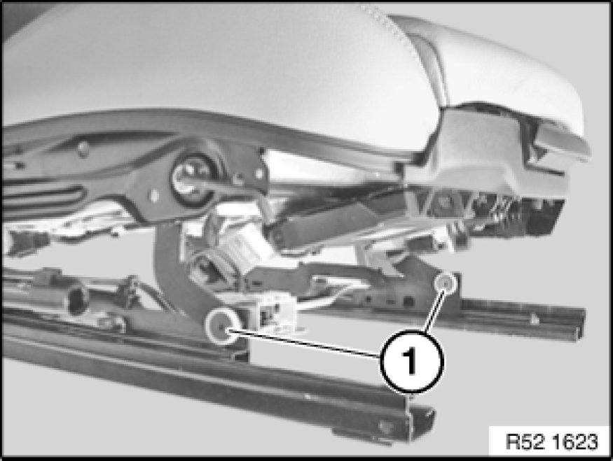
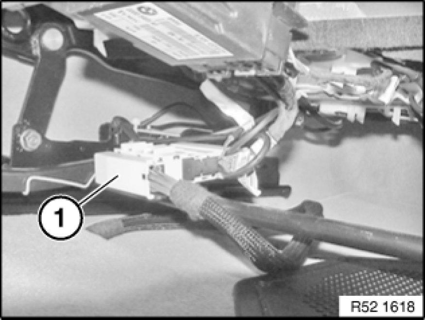
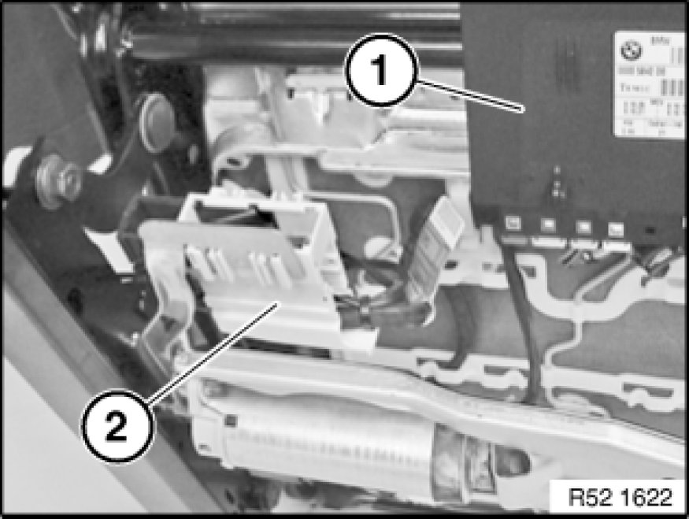
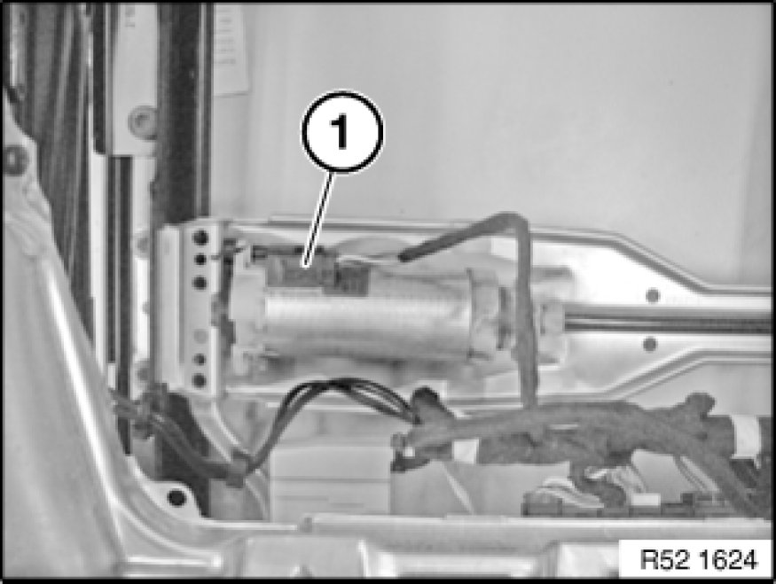
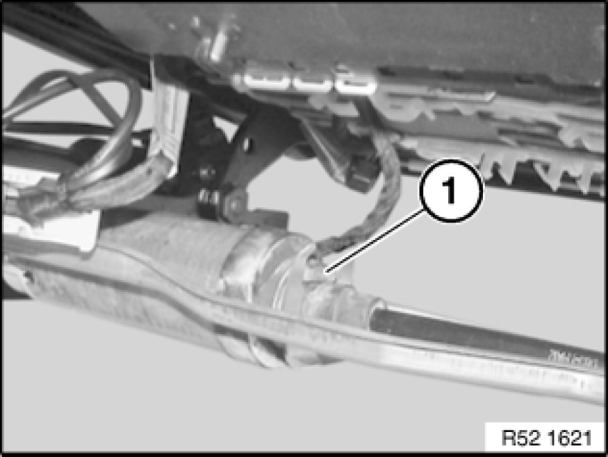
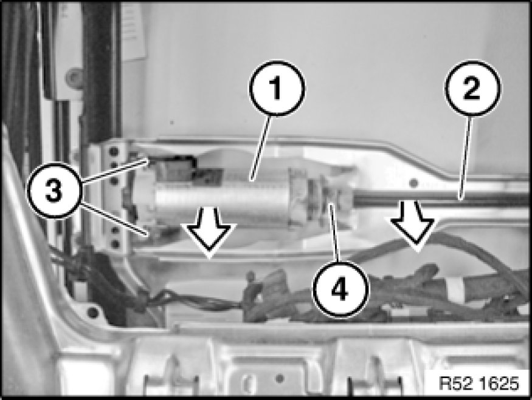
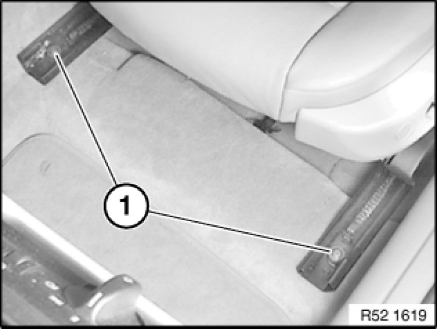

52 14 ... Additional Work in Event of Faulty Drive/Gearing for Longitudinal Adjustment
52 14 ... - Additional work in event of faulty drive/gearing for longitudinal adjustment

Release screws (1) of rockers for seat height adjustment.
Installation:
Carefully bend side section back and feed rocker out of top rail.
Tilt front seat back.

Unfasten plug connection (1) and disconnect.

Unclip central connector (2) from seat mechanism.
Unclip control units (1).

Unfasten plug connection (1) and disconnect.

Bend metal tab (1) open.

Lift drive (1) and flex shaft (2) out of guide (4) in direction of arrow.
Detach drive (1) from rubber mounts (3).
Detach flex shaft (3) from drive (1).

Release screws (1) at front.

Installation:
Install new drive for longitudinal seat adjustment.
Move front seat forwards.

Release screws (1) at rear.
Important!
Cover door sill with protective covers (risk of damage).
Lift out front seat and assemble.
Installation:
- Make sure flex shaft is correctly fitted on drive
- Carpet must not get between seat rails and floor pan in area of fastening points (grating noises)
- Powerlock screws must be replaced and must not be reused
- Powerlock screws are mechanical screw locks with trilobular threads
- Insert all screws loose to avoid twisting
- Tighten down all screws to specified torque
Tightening torque 52 10 1AZ 52 10 Front Seats.